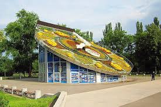
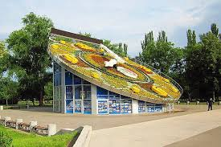
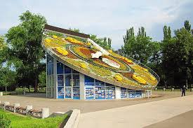

Квітковий годинник у Кривому Розі був запущений 22 серпня 2011 року з нагоди 20-річчя незалежності України. Діаметр циферблата становить 22 метри, довжина годинникової стрілки – 8, а хвилинної – 12,5 метра. Незвичайний механізм зайняв відповідне місце – посеред облаштованого в європейському стилі парку Героїв на проспекті Металургів. Що цікаво, під ним міститься відеогалерея краєзнавчого музею.

Квітковий годинник знаходиться на проспекті Металургів, у парку Героїв.